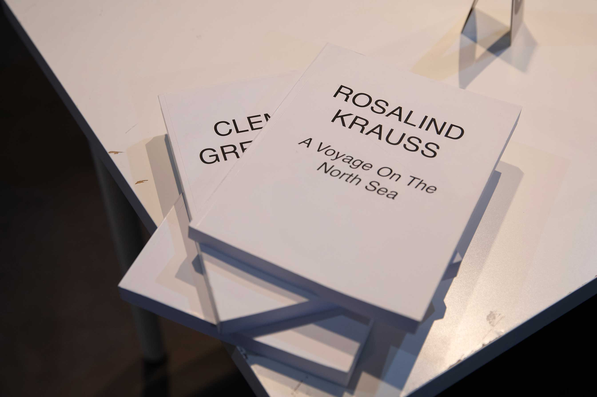
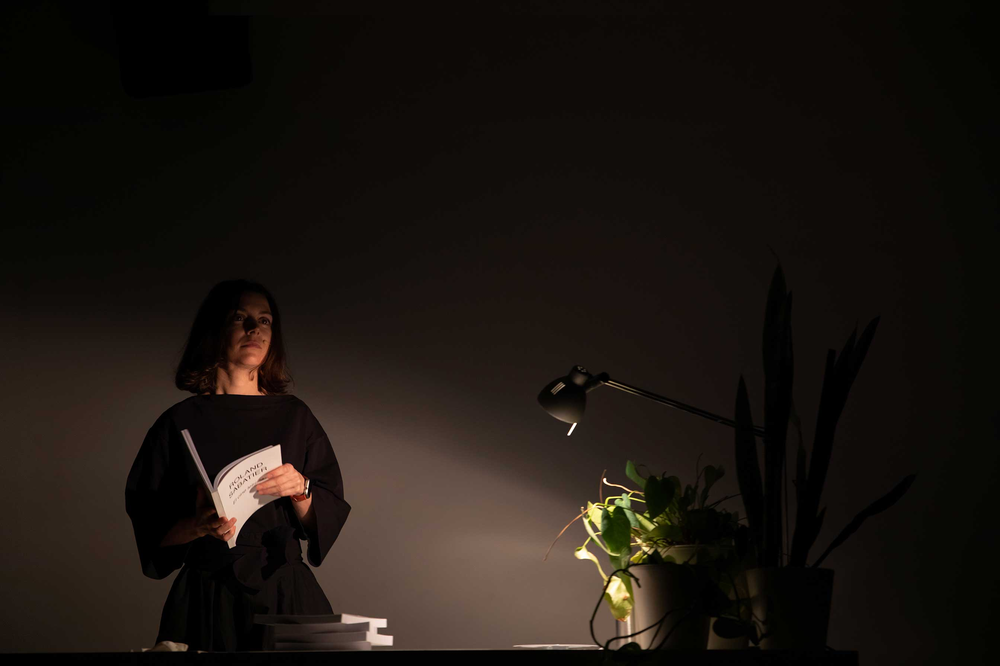
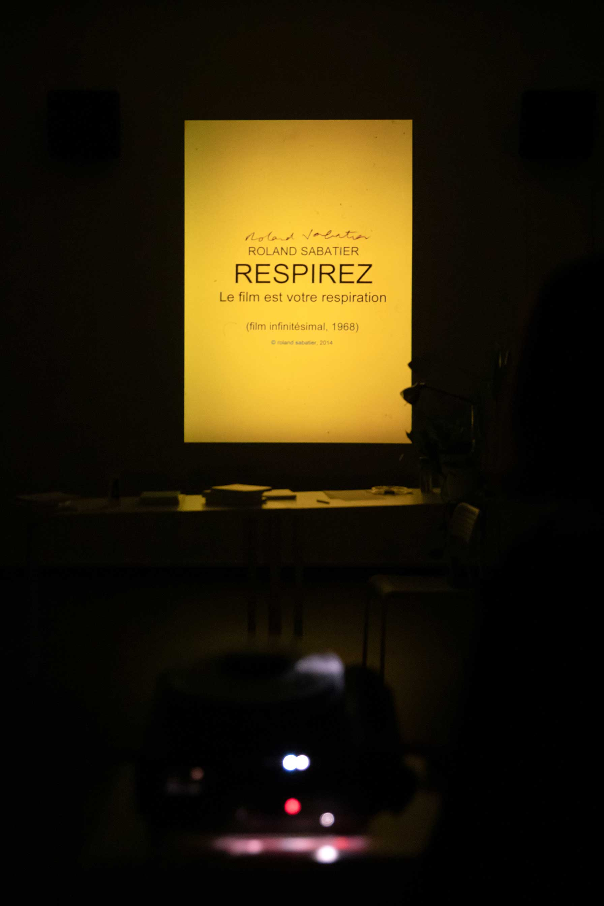
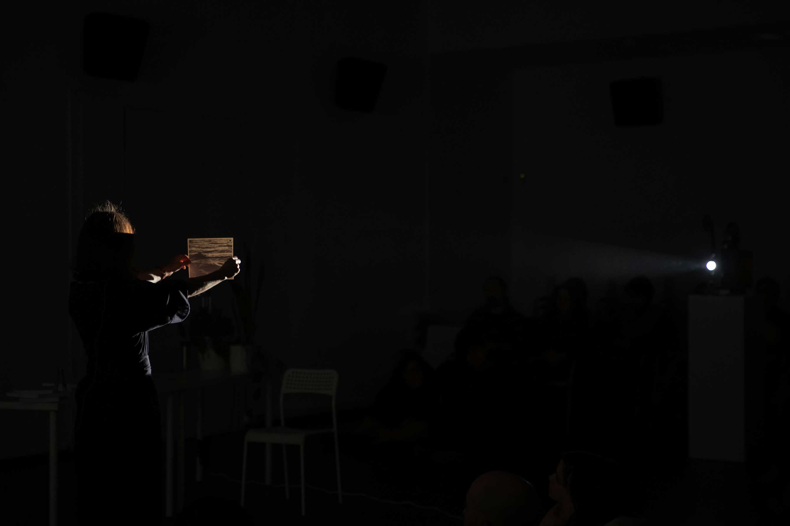
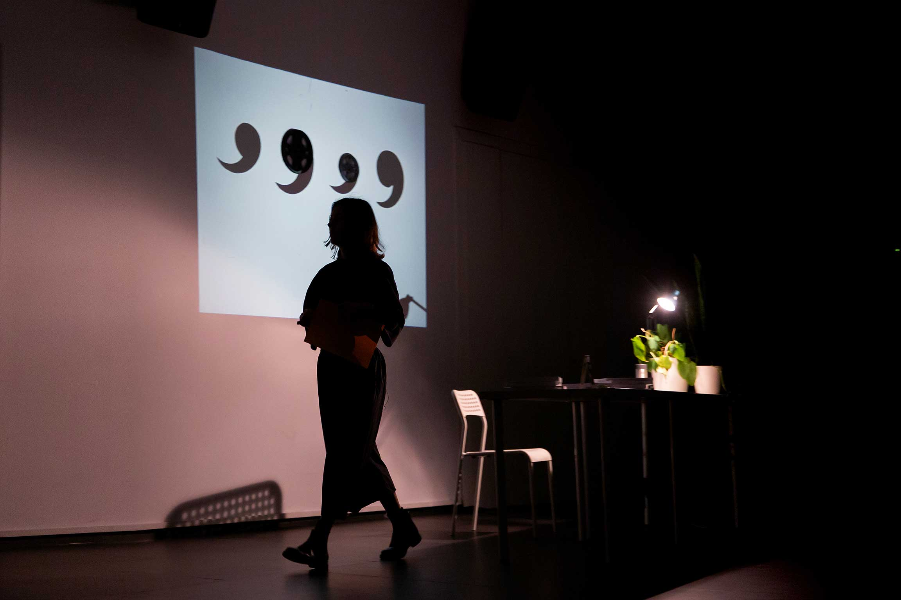
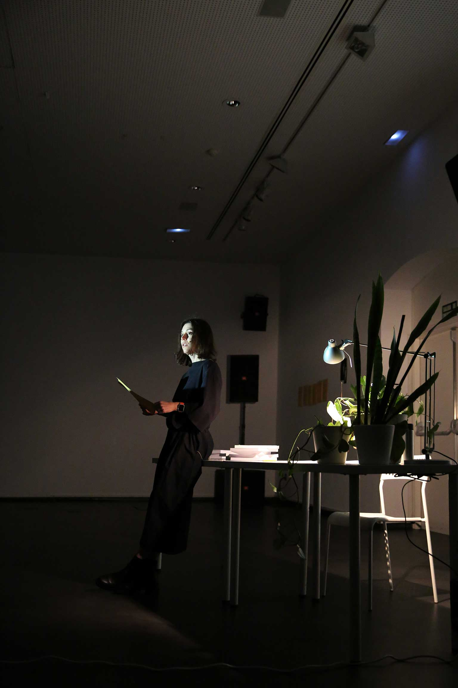

Performance view photographs:
Tzuan Wu (Taipei Contemporary Art Center, 2020), Susana Ponce (CA2M, Madrid 2024)
2015 — 2024
Performance and text
Fabricated books, balloon, film reels, plants, prints and photographs, 35mm slides, 16mm film projector and slide projector
Read text in English ⎪ French⎪ Spanish ⎪ Mandarin ⎪ Persian ⎪ Swedish
Things Said Once exists as a comic too, with drawings by Paula Guerrero.
As a performance, Things Said Once has been presented in Teheran, Madrid, Taipei, Mexico City, Oberhausen, Montevideo, Barcelona, Cuenca, Málaga, Brussels, Bristol, New York.
Thanks to: Rafa Martínez del Pozo, Rouzbeh Rashidi, Isabel de Naverán, Maximilian Le Cain, Núria Gómez Gabriel, Toni D'Angela, Érik Bullot, Robert Smart, Pip Chodorov and New Media Society.
→ Digital documentation (Spanish)
«[...] Esperanza Collado’s insightful and generous essay ‘Things Said Once’, a rigorously constructed series of citations drawn in part from her research on paracinematic practices. One of the key figures that emerges here is Hollis Frampton who was the first figure to introduce us to the idea of the artist or filmmaker as ‘metahistorian’, revealing a means by which the history of cinema could be used to act upon itself thereby destabilising the apparent security of our current condition.
[...]Esperanza’s assemblage mimics those strategies devised by Walter Benjamin for Arcades Project, resulting in a work which gains its meaning through the arrangement of its material.» (Daniel Fitzpatrick and Alice Butler in «Introduction», in Luminous Void: Experimental Film Society Documents, EFS Dublin, Ireland, 2017)